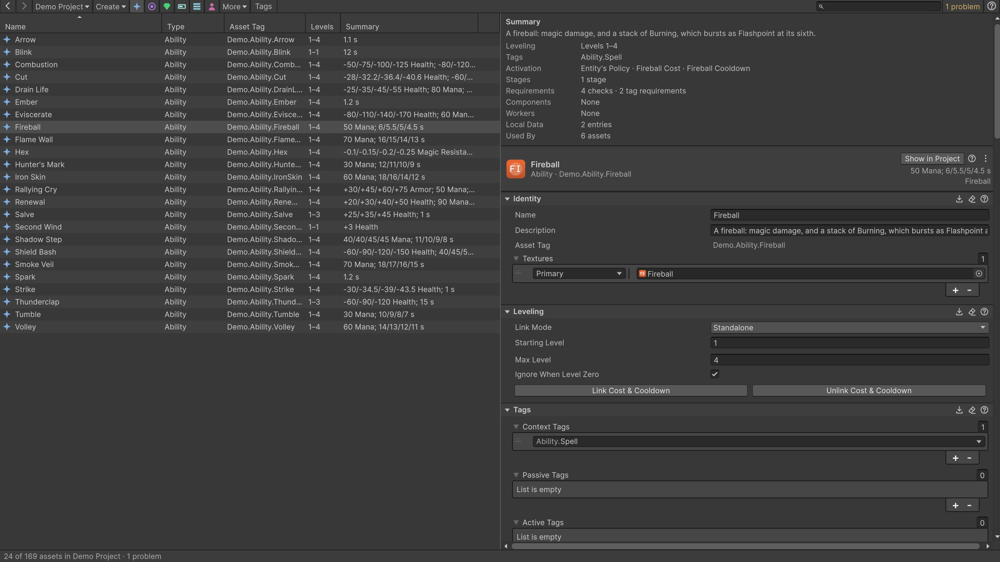

The detail pane
The detail pane shows the selected asset's Summary above its inspector.

The Forge filtered to abilities, an ability's summary and inspector beside the list.
The summary
The summary follows the asset's edits. From the top, it holds these lines:
| Line | Shows |
|---|---|
| Description | The asset's description, where it has one. |
| A line for each inspector section | The section's one-line summary, such as Leveling Levels 1–5. |
| Kind, Reads, Used By | For a Scaler asset: its kind, what it reads, and what uses it. |
| Requires, Must Not Have | For a Requirement Template: what it requires, and what it must not have. |
| Problems | Last: what the validator finds. |
The inspector
The inspector under the summary is the asset's own, as the Inspector shows it (Inspectors). In The Forge it differs in two ways:
- Its header's Open in The Forge is Show in Project.
- The header of an ability, effect, item, entity, attribute or attribute set shows the asset's file name under it, since the list shows its name alone.